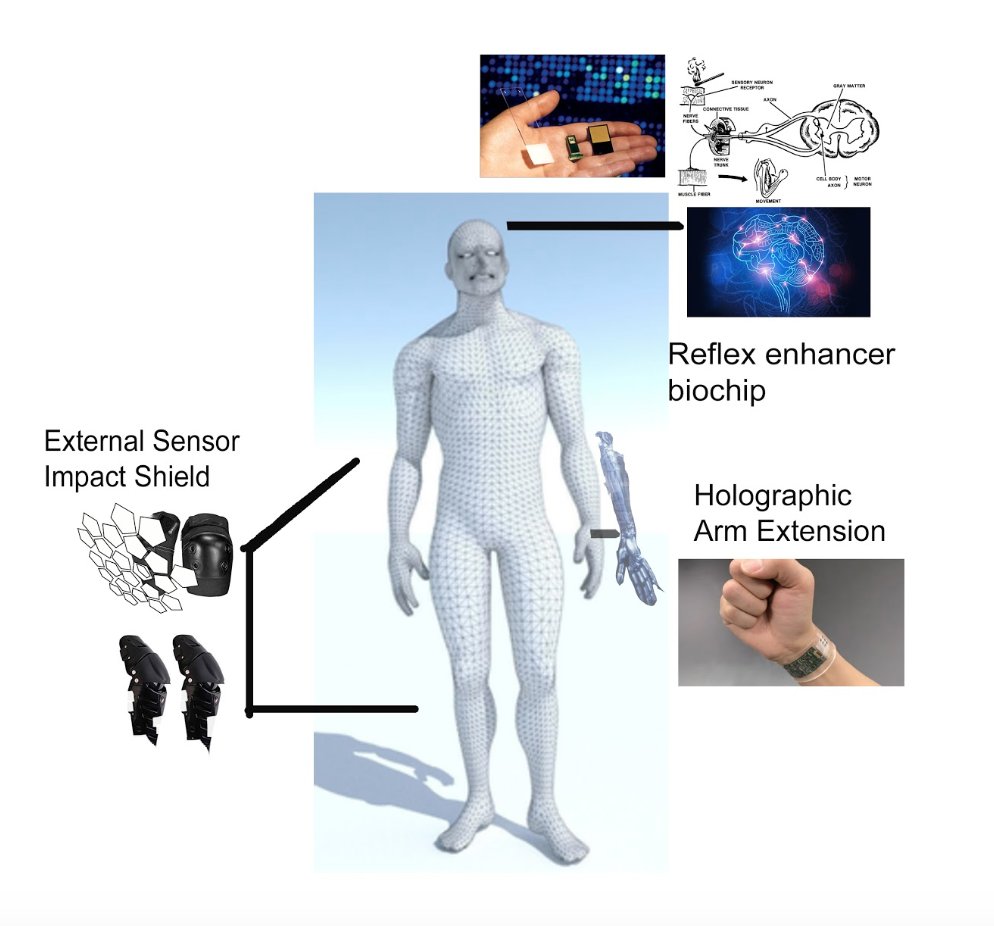
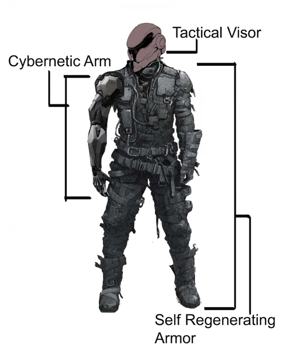

Practical
Aesthetic

Title: Upgrade
Medium: Photoshop
For the practical, while thinking about cybernetic features, I thought about what would the average person need. For internal modifications, I decided for a biochip that would increase the reflex. This brain implant would prevent the user from small to large accidents. For external modifications, I thought of having a wristband that could control other devices. Think of bluetooth, but much more advance and having a cool holographic arm. My last modification, also external, is a external self materializing shield. When equipped the sensor on the device will constantly monitor the area for objects moving at a high speed or if you fall off your bike. A shield will materialize, cushioning the impact.
For the aesthetic, I steered toward the cyberpunk and dystopian themes. The tactical visor allows for advanced monitoring, manufactured for military operations. The second piece would be the self-regenerating armor, the suit if damaged would repair itself with nanomachines. The last one, is your average cybernetic arm referenced largely in pop-culture.